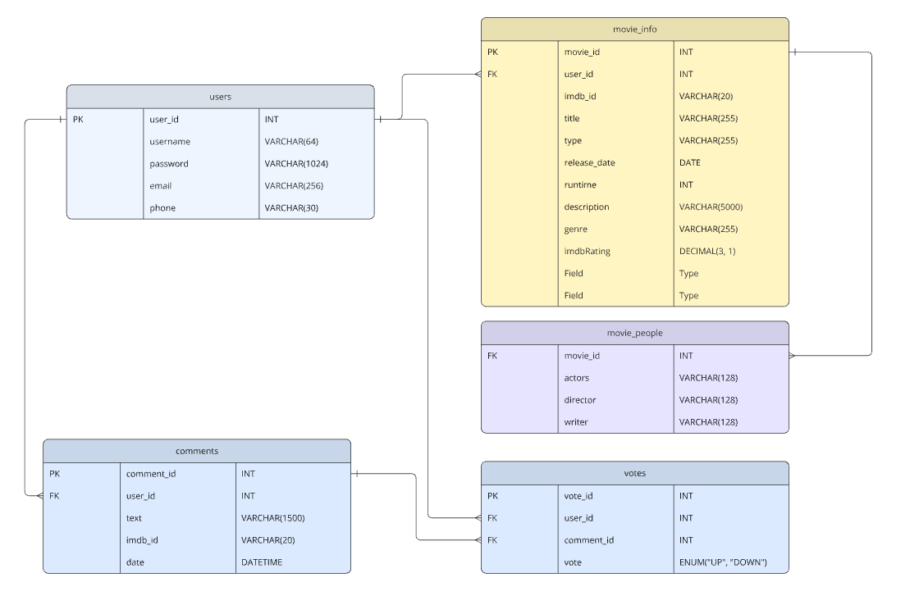
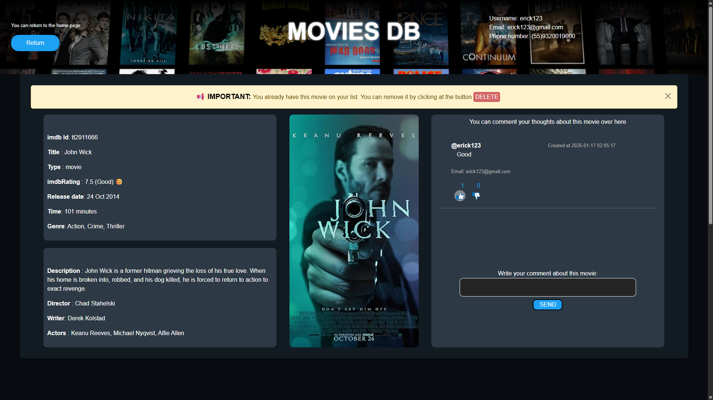
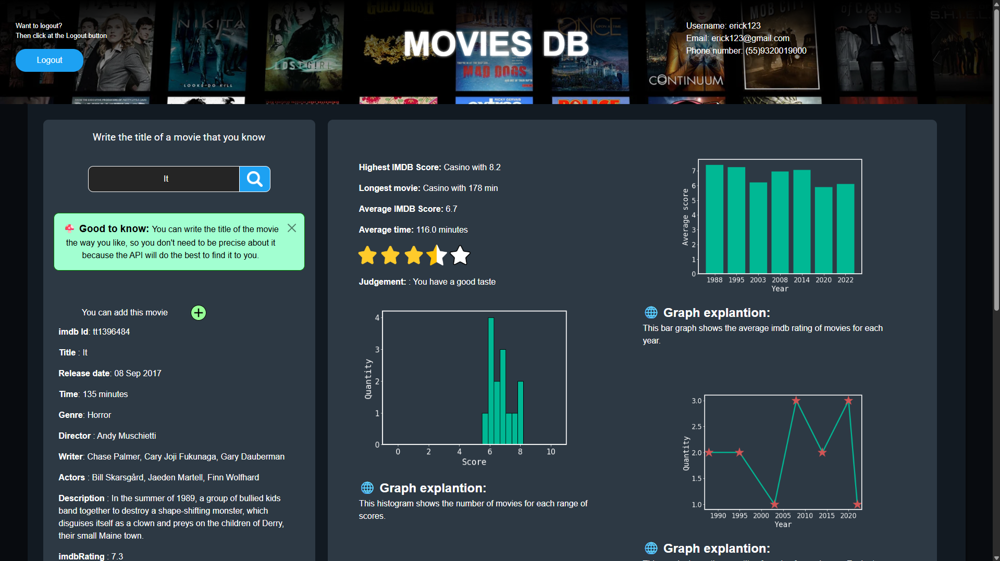
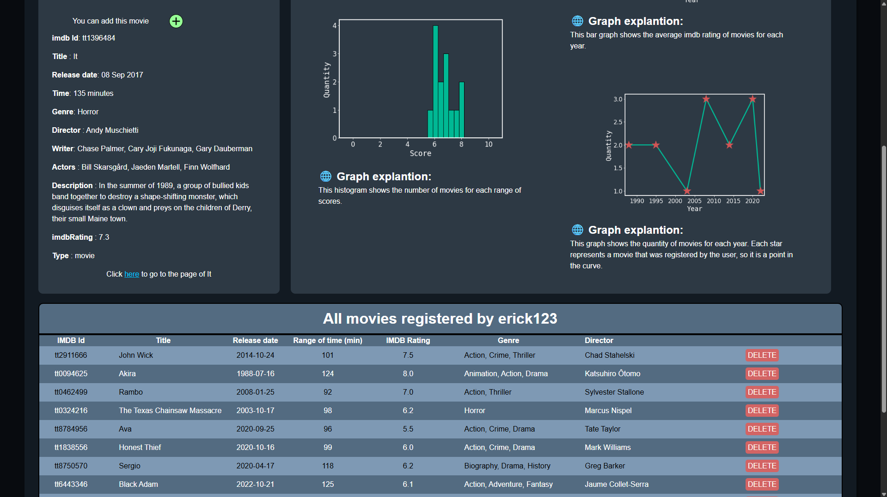
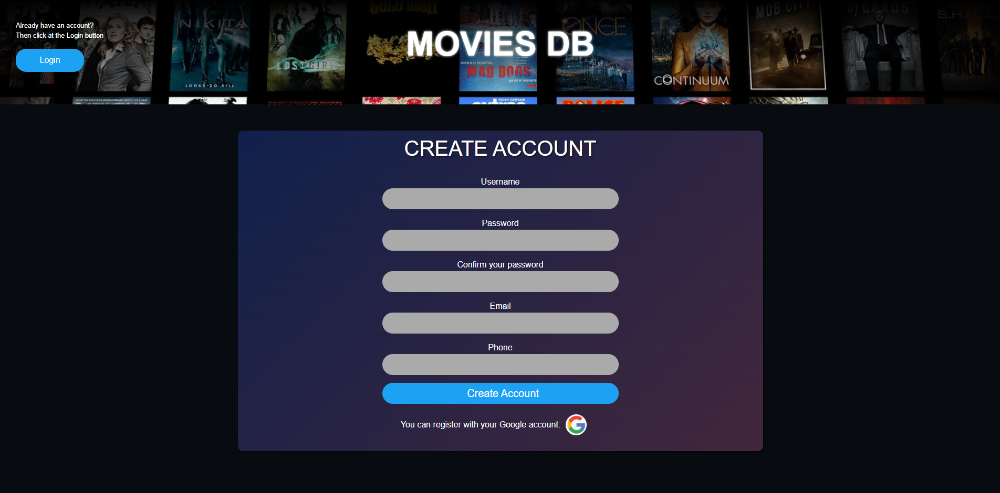

MovieDB - A full-stack system built with Python
Overview
This application is a full-stack system built with Python and Flask that manages movie metadata, user interactions and personalized analytics. It is focused on backend architecture, relational data modeling with pure SQL and user-driven workflows.
The application implements authentication, comments, reactions and user-specific statistics, emphasizing clarity, explicit contracts and maintainable design.
Key Features
- User authentication
- OAuth2 integration with Google Cloud
- Individual page for each movie
- Movie search by title with direct navigation to the movie page
- Comment system (users can create comments on movie pages)
- Like and dislike system (users can react to comments)
- User-specific statistics dashboard based on the user's movie list
- Dynamic generation of charts per user
- Users can add and remove movies at any time
Tech Stack
- Python: primary programming language
- Flask: backend web framework
- matplotlib: server-side chart generation
- MySQL: relational database management system
- mysql-python-connector: database driver for MySQL
- HTML, CSS and JS: frontend technologies
- JINJA2: server-side templating engine
Technical notes
- No ORM is used; all database interactions are implemented using explicit SQL queries
- Passwords are securely hashed using Werkzeug
- Statistics are built from real aggregated data, not mocked or hard-coded
- The application applies common security best practices, including:
- SQL Injection prevention: all queries are properly parameterized
- CSRF: the features of flask won't allow such attack
- brute force attacks: if someone is able to access the database, brute force attacks over the passwords won't be enough to take the passwords due to werkzeug encryptation.
Database schema for this project

How to use
You can run a server for this application by following the steps:
- Install MySQL and create a user with a password.
- Create and activate a Python virtual environment.
- From the project root directory, run: pip install -r requirements.txt
- Run the main.py script and provide your MySQL credentials when prompted
- Access the application at: /login.
Note: Database schema creation is automated on first run
Here are some images of the project:
Page for a single movie

Home page

Other part of the home page

Page to register an account
